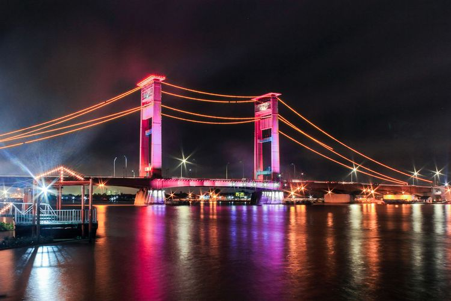

| Nama Tempat | Deskripsi | Gambar |
|---|---|---|
| Taman Bunga Celosia Spring Hill | Taman Bunga Celosia Spring Hill termasuk tempat wisata di Palembang yang lagi hits belakangan ini. Lokasinya berada di Jalan Letjen TNI Dr. H. Ibnu Sutowo, Talang Klp., Kecamatan Alang-Alang Lebar, Kota Palembang. Taman ini buka dari 09:00-16:30 WIB, dengan biaya tiket masuk hanya Rp 10.000 dan tambahan tiket parkir sekitar Rp 2.000-3.000 ribu saja. Salah satu bunga ikoniknya yaitu bunga celosia atau nama lainnya bunga jengger ayam (karena bentuknya menyerupai jengger ayam). Tempatnya yang indah, sangatlah cocok untuk dijadikan spot foto yang instagramable. |
|
| Pulau Kemaro | Pulau Kemaro merupakan tempat wisata di Palembang yang terletak di tengah Sungai Musi dan tak jauh dari Jembatan Ampera. Komon, pulau ini terbentuk melalui proses alamiah dari kumpulan tanah dan lumpur di muara sungai. Daya tarik Pulau Kemaro yaitu adanya situs sejarah seperti Pagoda berlantai 9, Klenteng Hok Tjing Rio, pohon cinta, hingga makam penunggu pulau. Di sana, kita akan merasakan kultur ala negeri tirai bambu, Cina. Maka tak heran, jika waktu terbaik mengunjungi Pulau Kemaro adalah saat perayaan Cap Go Meh maupun perayaan masyarakat etnis Tionghoa. |
|
| Jembatan Ampera | Jembatan Ampera adalah tempat wisata di Palembang yang terkenal dan Instagramable, sekaligus menjadi ikon dari Kota Palembang. Lokasinya berada di Jl. Mayjen. H. M. Ryacudu. Rasanya kurang afdol, kalau ke Palembang dan tidak mengunjungi ini. Pasalnya, Jembatan Ampera sempat menjadi yang terpanjang di Asia Tenggara dengan panjang lebih dari 1000 meter, lebar 22 meter, dan tinggi 63 meter. Terlebih, pasca pelaksanaan Asian Games 2018, jembatan ini telah dibenahi. Sehingga semakin terlihat keren dan modern. |

|